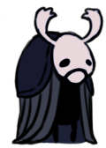

Dirtmouth é a primeira área diferente do jogo, e uma das mais especiais. Diferente de muitas outras, aqui não se encontra nenhum perigo, apenas uma cidade fantasma, com apenas um morador a vista, o Inseto Ancião. Ao longo de sua jornada, mais e mais casas se abrem, e o ambiente calmo se torna um lugar ótimo para revisitar depois de longas jornadas. O banco pode ser de ferro, mas te garanto que ele é confortável.
Dirtmouth é a primeira área diferente do jogo, e uma das mais especiais. Diferente de muitas outras, aqui não se encontra nenhum perigo, apenas uma cidade fantasma, com apenas um morador a vista, o Inseto Ancião. Ao longo de sua jornada, mais e mais casas se abrem, e o ambiente calmo se torna um lugar ótimo para revisitar depois de longas jornadas. O banco pode ser de ferro, mas te garanto que ele é confortável.
"Havia um grande reino embaixo de nossa cidade. Há muito tempo caiu em ruína, mas ainda atrai pessoas para suas profundezas.
Riqueza, glória, iluminação, aquela escuridão parece prometer todas as coisas. Tenho certeza que você também busca seus sonhos lá embaixo.
Bem, tome cuidado. É um ar doentio que enche o lugar. As criaturas ficam loucas e os viajantes são roubados de suas memórias. Talvez sonhos não sejam tão bons afinal de contas..." - Inseto Ancião